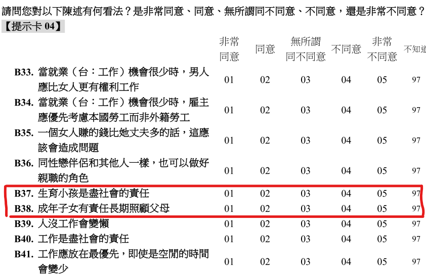
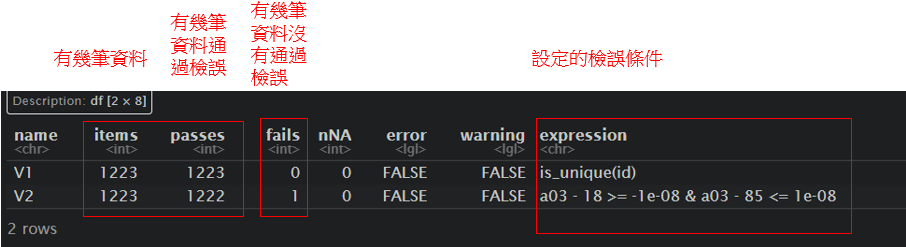
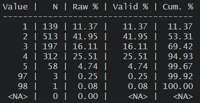

Chapter 6 應用篇_資料清理與整理
以下為資處常使用的套件:
大部分的資處會使用到一個整合性的套件tidyverse，其功能非常強大，在此只會簡單介紹部分常用內容，另外也有些其他套件可以更容易獲有效率來處理資料。
library(tidyverse) # 大部分的資處工具
library(data.table) # 高效能資處工具
library(DescTools) # 初步描述統計
library(sjmisc) # 設置缺失值
library(sjlabelled) # 上標籤用
library(validate) # 資料檢誤接下來關於資料清理的部分，並不會特別單一仔細的講解，而是會使用簡單的實際例子來呈現，並適時補充一點額外的解釋，當然由於R語言的功能強大有很多套件，也持續在整合並強化，下面介紹的資料清理可能不會是唯一的方式，也不一定是最有效率方式，但仍可以稍微參考。
6.2 簡單實作資料清理
接下來會使用前面範例的WVS_w7中CSV格式的檔案，來繼續示範資料的初步清理與整理，
以下範例會以關於台灣中生育小孩及照顧父母這兩個的價值觀作為簡單的發想進行操作，
「不同性別、年齡、平均月收入、主觀階級的人會如何思考->生育小孩是盡社會的責任與成年子女有責任長期照顧父母」
上一章節有介紹過一些瀏覽資料的語法，在此因為我們匯入的是沒有標籤的csv資料，各個變項與值代表什麼可以到調查問卷或codebook查看，

由此可知B37變項所代表的值的是「是否同意生育小孩是盡社會的責任」，且值代表的是「1是非常同意、5是非常不同意」
由此可知B38變項所代表的值的是「是否同意成年子女有責任長期照顧父母」，且值代表的是「1是非常同意、5是非常不同意」
從問卷可得知以下面變項再資料當中題號、題目與值代表的意思:
(問卷的題號有時也會跟資料不太一樣，以此份資料為例，問卷為大寫字母、而資料為小寫字母)
- 性別 - A01
- 年齡 - A03
- 平均月收入 - A21_3
- 主觀階級 - A32
- 生育小孩是盡社會的責任 - B37
- 成年子女有責任長期照顧父母 - B38
6.2.2 讀取檔案
library(readr)
WVS_w7 <- read_csv("data/WVS_w7/data.csv",
locale = locale(encoding = "BIG5"))6.2.4 資料檢誤
一開始可能可以做一些「資料檢誤」的工作來檢查資料，validate就是較有效率處理的套件，以下只做簡單介紹，更多詳細檢誤方式可以參考1、參考2
# 以下簡單設定幾個檢誤條件
rules <- validator(
is_unique(id), ## 檢查是否有重複id
a03 >= 18 & a03 <= 85 ## 檢查年齡是否在18-85之間(資料只對18-85歲抽樣)
)
out <- confront(WVS_w7_n1, rules) ## 前面放使用data，後面放檢誤規則
results <- summary(out) %>% ## 呈現檢誤結果
as.data.frame()
results
vilt = violating(WVS_w7_n1, out[2]) ## 查看那些資料是不符合檢誤的條件，out中是設定幾個檢誤條件
vilt

6.2.5 瀏覽資料
查看變項初步分配，來檢查是否有不合理值或缺失值
(以下指令都還有各自呈現的細節可以調整，可自行查看該指令的help)
## 初步次數分配 & 描述統計
Desc(WVS_w7_n1$b37) ## 呈現描述統計與次數分配和圖
table(WVS_w7_n1$b37, useNA = "always") ## 呈現簡單次數分配 useNA
frq(WVS_w7_n1$b37) ## 呈現更多內容的次數分配表
上圖為frq(WVS_w7$b37)的結果，我們初步得知此資料當中，b37變項有多少人/比例回答非常同意或非常不同意，但須注意可以看到有97、98的選項，從問卷當中可得知「97是不知道、98是拒答」，回答這兩個選項的應該是不會被納入分析當中，接下來也會說明如何處理，